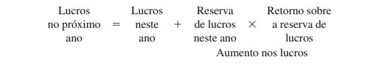
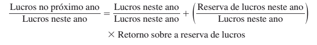

4 Avaliação de Ações
4.1 Calculando o preço de avaliação de uma ação
Assim como os títulos de dívida, o preço de avaliação de uma ação também é o valor presente dos fluxos de caixas futuros. Entretanto, o fluxo de caixa de uma ação é menos previsível.
Enquanto os títulos de dívidas possuem fluxo de caixa previstos em contrato (a exemplo dos cupons e do valor de face), o fluxo de caixa de uma ação é baseado em uma expectativa de ganhos futuros (dividendos + ganho de capital).
Mas apesar dessa diferença, em ambos os casos temos uma situação de fluxo de caixa descontado, o que nos leva a uma fórmula bem semelhante:
\[ P_0 = \sum{\frac{DIV}{(1+r)^n}} + \frac{P_N}{(1 + r)^N} \]
Em que:
\(P_0\) é o preço de avaliação da ação
\(n\) é o número de períodos considerados na avaliação
\(Div_n\) são os dividendos esperados para cada período \(n\)
\(r\) é a taxa retorno requerida para essa ação
Observe que basicamente mudamos a nomeclatura de cupons (\(C_n\)) para dividendos (\(Div_n\)) e de valor de face (\(P_N\)) para preço de avaliação futura (\(P_N\)). Este último se refere ao ganho de capital, ou seja, quando um investidor investe um valor \(P_0\) na expectativa de vender mais caro (\(P_N\)) em um futuro período \(N\).
4.2 Dividendos versus Ganho de Capital
Aprendemos que o valor de um
ativo é determinado pelo valor presente de seus fluxos de caixa futuros. Uma ação apresenta dois tipos de fluxos de caixa. Em primeiro lugar, ações geralmente pagam dividendos de forma regular. Em segundo lugar, o acionista recebe o preço da venda quando vende a ação. Assim, para avaliar as ações, precisamos responder a uma importante pergunta: O preço de uma ação é igual:
Ao valor presente descontado da soma do dividendo do próximo período mais o preço da ação no próximo período? ou;
Ao valor presente descontado de todos os dividendos futuros?
Esse é o tipo de pergunta que os alunos adorariam ver em um teste de múltipla escolha, pois tanto (1) quanto (2) estão corretas.
Para ver que (1) e (2) estão corretas, tomemos o exemplo de um indivíduo que vai comprar uma ação e mantê-la por um ano. Logo, o período de manutenção em carteira é de um ano. Além disso, ele está disposto a pagar \(P_0\) pela ação hoje. Ele calcula que:
\[ P_0 = \frac{DIV_1}{(1+r)^1} + \frac{P_1}{(1 + r)^1} \]
\(Div_1\) é o dividendo esperado pago no fim do ano e P1 é o preço esperado no fim do ano. \(P_0\) é o valor presente do investimento na ação. O termo no denominador (\(r\)) é a taxa de desconto apropriada para a ação e representa o retorno esperado que os investidores exigem para disponibilizar fundos para as ações (i.e., o retorno exigido).
Parece bastante fácil, mas de onde vem \(P_1\)? \(P_1\) não vem do nada. Na verdade, precisa haver um comprador no fim do Ano 1 que esteja interessado em adquirir a ação por \(P_1\). Esse comprador determina o preço por:
\[ P_1 = \frac{DIV_2}{(1+r)^1} + \frac{P_2}{(1 + r)^1} \] Ao substituirmos o valor de \(P_1\) da última equação com \(P_1\) da primeira equação, teremos:
\[ P_0 = \frac{DIV_1}{(1+r)^1} + \frac{\frac{DIV_2}{(1+r)^1} + \frac{P_2}{(1 + r)^1}}{(1 + r)^1} \] Desenvolvendo, temos:
\[ P_0 = \frac{DIV_1}{(1+r)^1} + \left( \frac{DIV_2}{(1+r)^1} + \frac{P_2}{(1 + r)^1} \right) \times \frac{1}{(1 + r)^1} \] \[ P_0 = \frac{DIV_1}{(1+r)^1} + \frac{DIV_2}{(1+r)\times(1 + r)} + \frac{P_2}{(1 + r)\times(1 + r)} \] \[ P_0 = \frac{DIV_1}{(1+r)^1} + \frac{DIV_2}{(1+r)^2} + \frac{P_2}{(1 + r)^2} \]
Podemos fazer uma pergunta similar para a fórmula anterior: De onde vem \(P_2\)? Um investidor no fim do Ano 2 está disposto a pagar \(P_2\) por causa do dividendo e do preço da ação no Ano 3. Esse processo pode ser repetido até a exaustão. No fim, ficamos com:
\[ P_0 = \frac{DIV_1}{(1+r)^1} + \frac{DIV_2}{(1+r)^2} + \frac{DIV_3}{(1+r)^3} + \dots + \infty \]
\[ P_0 = \sum_{n=1}^{\infty}{\frac{DIV_n}{(1+r)^n}} \]
Esse é um resultado bastante útil. Uma objeção comum à aplicação da análise do valor presente a ações é que os investidores são muito limitados ao curto prazo para se preocuparem com o fluxo de longo prazo dos dividendos. Esses críticos argumentam que um investidor não verá além de seu horizonte de tempo. Assim, os preços em um mercado dominado por investidores de curto prazo refletiriam somente dividendos de curto prazo. Contudo, nossa discussão mostra que um modelo de descontos de dividendos de longo prazo se mantém até mesmo quando os investidores têm horizontes de curto prazo. Embora um investidor possa querer seu investimento mais cedo, ele precisa encontrar outro investidor que esteja disposto a comprar. O preço que esse segundo investidor vai pagar dependerá dos dividendos depois da data de aquisição.
4.3 Perpetuidade e o Crescimento de Dividendos
A discussão anterior mostra que o preço de uma ação é o valor presente de seus dividendos futuros. Como aplicamos essa ideia na prática? A última equação representa um modelo geral que e se aplica quando se espera que os dividendos aumentem, declinem ou permaneçam iguais. O modelo geral pode ser simplificado se houver a expectativa de que os dividendos sigam alguns padrões básicos: (1) crescimento zero, (2) crescimento constante e (3) crescimento variável.
4.3.1 Crescimento zero
Para o Caso do Crescimento zero, temos:
\[\boxed{P_0 = \frac{Div}{r}}\]
Em que:
- \(P_0\) Preço de Avaliação da ação
- \(Div\) é o dividendos experado ao longo da vida
- \(r\) é a taxa retorno requerida
4.3.2 Crescimento constante
Para o Caso do Crescimento constante:
\[\boxed{P_0 = \frac{Div}{r-g}}\]
Em que:
- \(P_0\) Preço de Avaliação da ação
- \(Div\) é o dividendos experado ao longo da vida
- \(r\) é a taxa retorno requerida
Obs.: Esta fórmula é conhecida como Modelo de Gordon.
4.3.3 Crescimento variável
\[\boxed{P_0 = \sum{\frac{DIV(1+g_1)^n}{(1+r)^n}} + \frac{\frac{Div_{N+1}}{r-g_2}}{(1 + r)^N}}\]
Para o Caso do crescimento variável, temos:
\[P_0 = \sum{\frac{Div{(1+g_1)}^n}{(1+r)^n}} + \frac{Div_N}{r-g_2} \times \frac{1}{(1+r)^N}\]
que pode ser reescrita assim…
\[P_0 = \sum{\frac{Div{(1+g_1)}^n}{(1+r)^n}} + \frac{\frac{Div_N}{r-g_2}}{(1+r)^N}\]
Em que:
- \(P_0\) Preço de Avaliação da ação
- \(Div\) é o próximo dividendos experado
- \(r\) é a taxa retorno requerida
4.4 Modelo de Gordon
4.4.1 Cálculo do Preço
No tópico anterior vimos que, no caso dos dividendos (\(Div\)) na perpetuidade com crescimento constante (\(g\)), podemos usar o modelo de gordon para calcular o preço de avaliação:
\[\boxed{P_0 = \frac{Div}{r-g}}\]
Se usarmos a mesma fórmula para calcular o retorno esperado, ou o g, chegaremos a uma observação interessante. Vejamos como fazer no tópico seguinte.
4.4.2 Cálculo da taxa (r)
Partindo do modelo de gordon:
\[P_0 = \frac{Div}{(r-g)}\]
e isolando o r, temos:
\[r-g = \frac{Div}{P_0} \;\; \rightarrow \;\; \boxed{r = \frac{Div}{P_0} + g}\]
Observe que o retorno esperado (\(r\)) é o retorno sobre dividendos (\(Div/P_0\)) mais o retorno em ganhos de capital (\(g\)):
| \(r\) | \(=\) | \(\frac{Div}{P_0}\) | + | \(g\) |
| retorno esperado | retorno sobre dividendos | retorno em ganhos de capital |
4.4.3 Cálculo do g
De forma análoga, o \(g\) é a parte do \(r\) que se refere ao ganho de capital. Veja o que acontece se isolarmos o g.
Partindo do modelo de gordon:
\[P_0 = \frac{Div}{(r-g)}\] e isolando o g, temos:
\[r-g = \frac{Div}{P_0} \;\; \rightarrow \;\; r = g + \frac{Div}{P_0} \;\; \rightarrow \;\; \boxed{g = r - \frac{Div}{P_0}}\] ou seja:
| \(g\) | \(=\) | \(r\) | \(-\) | \(\frac{Div}{P_0}\) |
| retorno em ganhos de capital | retorno total esperado pela ação | retorno em dividendos |
4.5 Estimativa do crescimento
4.5.1 De onde vem o crescimento (g)
A discussão anterior presumia que os dividendos crescem a uma taxa g. Agora, queremos estimar essa taxa de crescimento. Pense em um negócio cujas receitas esperadas para o próximo ano sejam as mesmas deste ano, a menos que uma parte dos lucros não seja paga como dividendos, isto é, se algum lucro for reservado para reinvestimento na empresa. Essa situação é bastante plausível, pois sem um novo investimento algumas empresas apenas mantém sua estrutura atual não conseguindo aumentar os lucros ao longo do tempo. Isso nos leva à seguinte equação:

O aumento nos lucros é uma função tanto de reserva de lucros quanto de retorno sobre a reserva de lucros. Agora dividimos ambos os lados da Equação acima pelos lucros neste ano, produzindo:

4.5.2 Cálculo do g fundamentalista
O lado esquerdo da Equação é um mais a taxa de crescimento em lucros, que escrevemos como 1 + g. A proporção da reserva de lucros para os lucros é chamada de taxa de retenção. Portanto, podemos escrever:
\[1+g= 1 + Taxa\: de\: retenção \times Retorno\: sobre\: reserva\: de\: lucros\]
É difícil para um analista determinar o retorno esperado sobre a reserva de lucros no momento, devido ao fato de os detalhes sobre projetos futuros geralmente não serem informações públicas. Contudo, presume-se que os projetos selecionados no ano corrente tenham um retorno previsto igual aos retornos dos projetos passados. Logo, podemos estimar o retorno previsto para a reserva de lucros no momento pelo histórico do retorno do patrimônio líquido, ou ROE. Afinal, o ROE é o retorno sobre todo o patrimônio da empresa, que é o retorno sobre o acúmulo de todos os projetos passados dela.
Partindo da equação anterior, temos uma forma simples de estimar o crescimento sobre os lucros:
\[\boxed{g = Taxa\: de\: retenção \times Retorno\: sobre\: reserva\: de\: lucros\: (ROE)}\]
4.6 Estimativa do retorno esperado
Assim como estimamos o g, também podemos fazer uma estimativa do retorno esperado (r) de uma ação, mas essa é uma discussão muito longa vamos deixar para os próximos capítulos.
4.7 Extra
O próximo tópico é apenas para mencionar um método bem simples de avaliação que é a avaliação por múltiplos ou índices. Essa avaliação por índices não será cobrada em prova, mas eu recomendo a leitura.